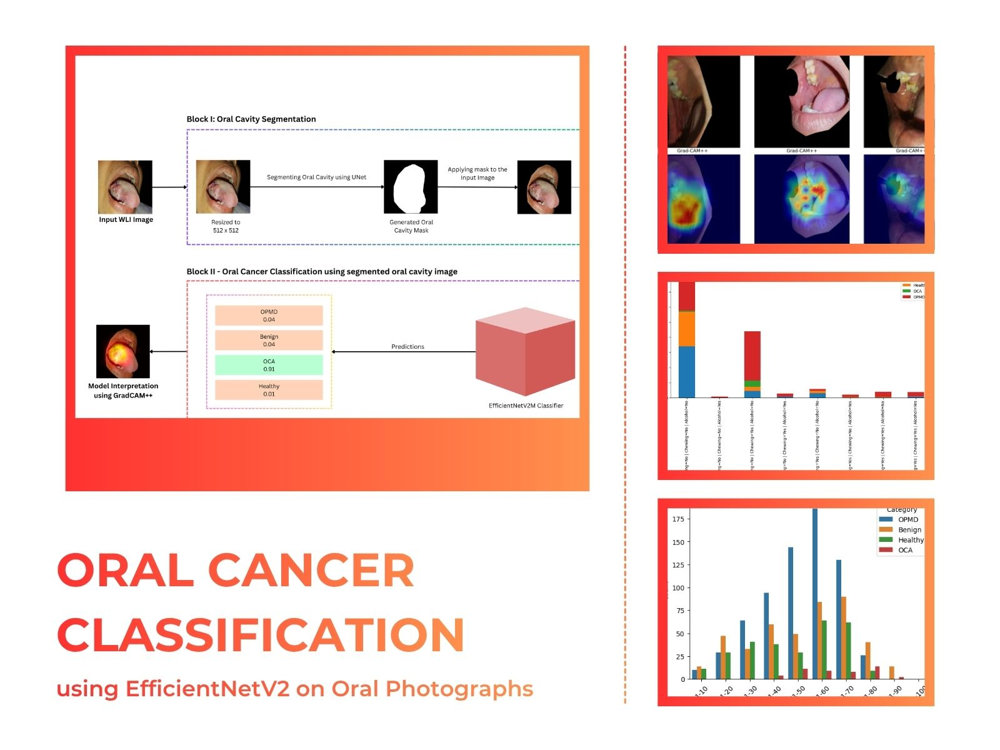
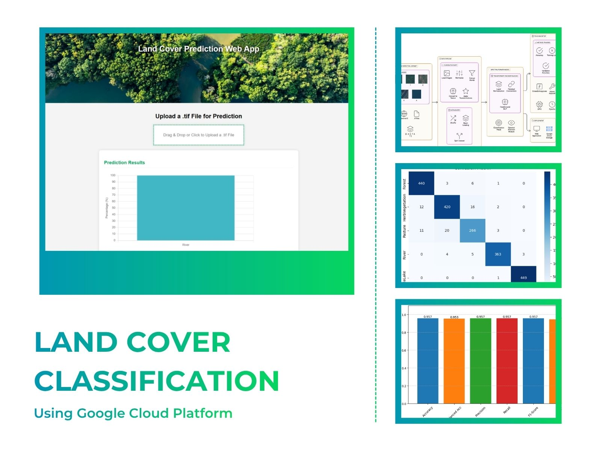
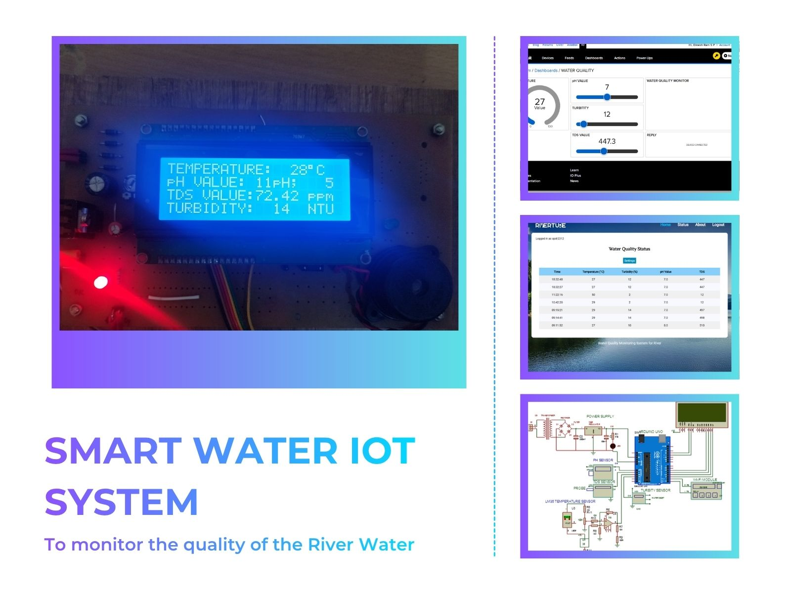

Dinesh Ram S P builds
models that see,
classify
and explain.
Building AI systems end-to-end — deep learning pipelines, computer vision, and the explainability layer that makes models trustworthy in production. MTech in AI · Peer-reviewed publication · Conference presentation at ICCCSP 2026.
Publication
AI Projects
Deployments
Presentation
Research discipline. Production mindset.
I build AI systems end-to-end — designing and training deep learning models, integrating explainability, and deploying to cloud infrastructure. My work spans computer vision for medical imaging, satellite remote sensing, and IoT sensor pipelines.
My MTech research produced a peer-reviewed journal publication and a conference-accepted paper — both from working, deployed systems, not just experiments. I'm drawn to problems where accuracy alone isn't enough: where a model needs to be interpretable, maintainable, and production-ready.
Technical toolkit
Organised by how central each area is to my engineering identity — not alphabetically.
Selected work
End-to-end AI systems spanning medical imaging, satellite remote sensing, and IoT. Click through for full case studies.

Smartphone-based oral disease screening via a segmentation-to-classification deep learning pipeline with explainable AI — designed for accessible, low-cost detection.

Custom Transformer-based satellite imagery classification deployed on Google App Engine with Grad-CAM, LIME & LRP — making every prediction transparent.

Real-time river water quality monitoring — sensors to cloud to ML assessment with automated alerts and a live web dashboard. Peer-reviewed and published.
Publication
Independent reviewers verified the methodology and results of a working, deployed IoT + ML system before acceptance — a standard few AI graduates meet at this stage.
Leadership & communication
- Organized 40+ weekly technical sessions for 200+ ECE students on emerging technologies — developing the ability to make complex topics accessible, a skill directly applicable to explaining model decisions to non-technical stakeholders.
- Led planning and execution for the Gyan Mitra intercollegiate symposium, managing technical and cultural event tracks, volunteer coordination, and logistics across multiple departments.
- Worked directly with faculty advisors and student volunteers to align event goals with institutional objectives, balancing technical rigour with broad participant engagement.
- Organized aptitude competitions and structured problem-solving sessions, building experience designing technical challenges and evaluating performance under time constraints.
- Conducted analytical reasoning events during Gyan Mitra, managing participant communication, judging criteria, and prize coordination end-to-end.
- Produced promotional materials and event documentation — experience in technical communication and stakeholder-facing presentation.
Certifications
- Meta Android Developer Professional CertificateCoursera
- Cisco Certified Network AssociateCCNA
- Problem Solving Through Programming in CNPTEL
- Joy of Computing using PythonNPTEL
- Object Oriented Programming Using PythonInfosys Springboard
- Data Structure and Algorithms Using PythonInfosys Springboard
- Introduction to NoSQL DatabasesInfosys Springboard
- Database Management SystemInfosys Springboard
Academic background
Thesis: Computer vision and XAI research — one peer-reviewed journal publication and one conference paper (ICCCSP 2026).
Built to ship. Looking for where to do it next.
If you're building production AI systems — computer vision pipelines, cloud-deployed models, or AI applications that need to be both accurate and explainable — I'd like to be part of that work. I usually reply within a day.